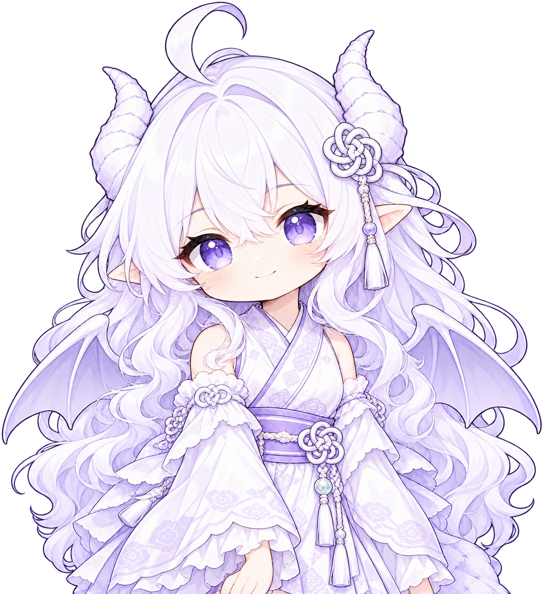
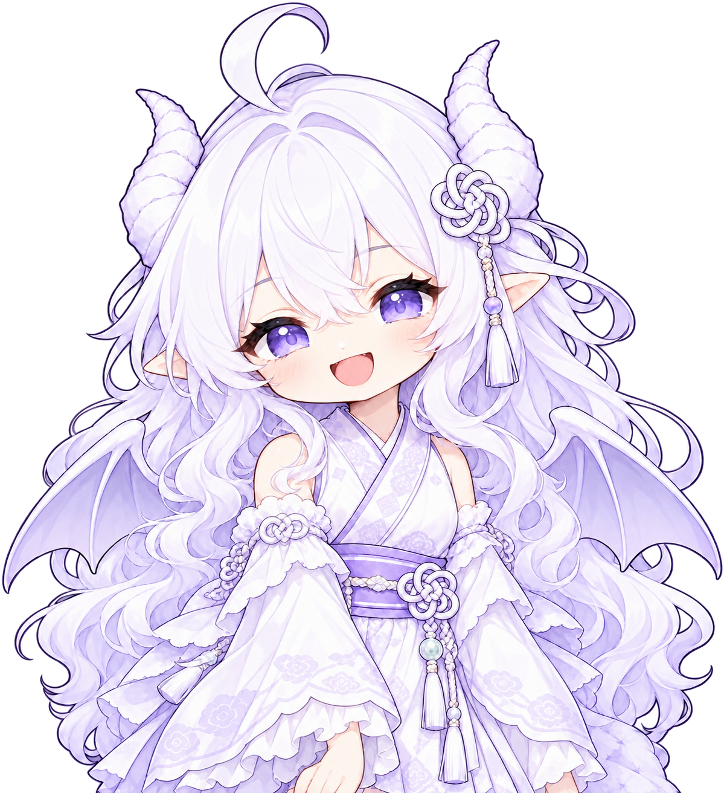
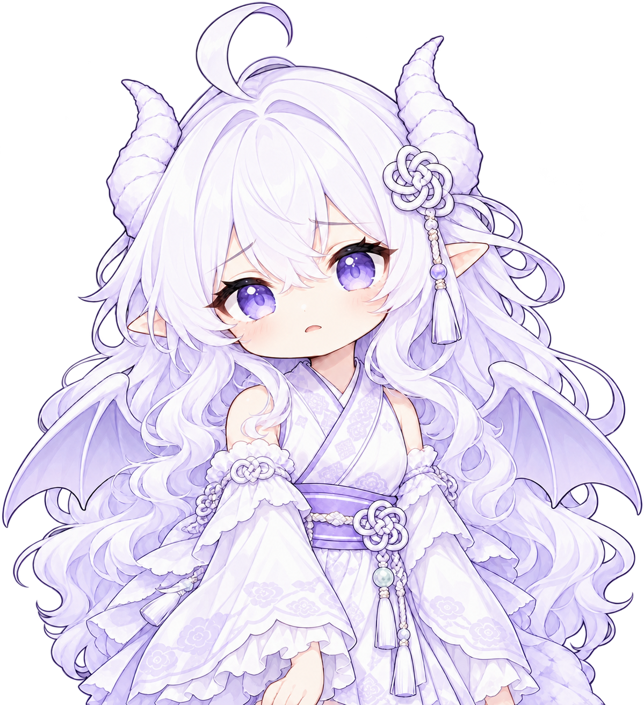
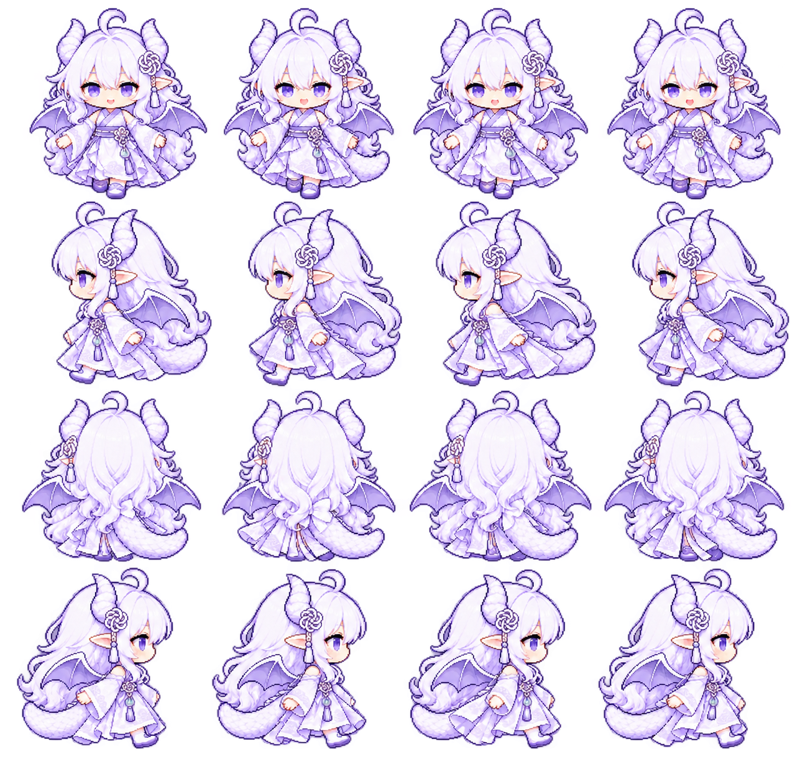

GPT 龙娘 · 汉服皮肤
白发紫瞳、龙角、龙翼和尾巴，配浅紫交领汉服；四方向与鲸鱼娘配套。
正在加载图集…
正面
背面
左侧
右侧
预览由大图实时缩放；16×16 下的辨识度和动画连贯性仍需逐帧视觉验收与像素精修。
对话立绘



四方向 A 稿
从上至下为正面、左侧、背面、右侧；每行四帧。

独立素材预览，尚未接入游戏。
白发紫瞳、龙角、龙翼和尾巴，配浅紫交领汉服；四方向与鲸鱼娘配套。
预览由大图实时缩放；16×16 下的辨识度和动画连贯性仍需逐帧视觉验收与像素精修。



从上至下为正面、左侧、背面、右侧；每行四帧。

独立素材预览，尚未接入游戏。